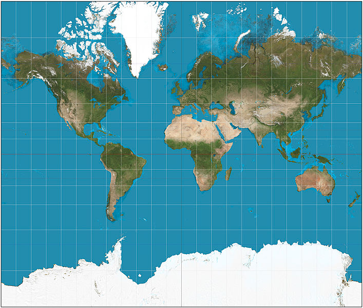
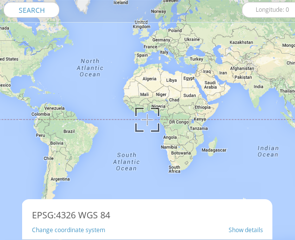
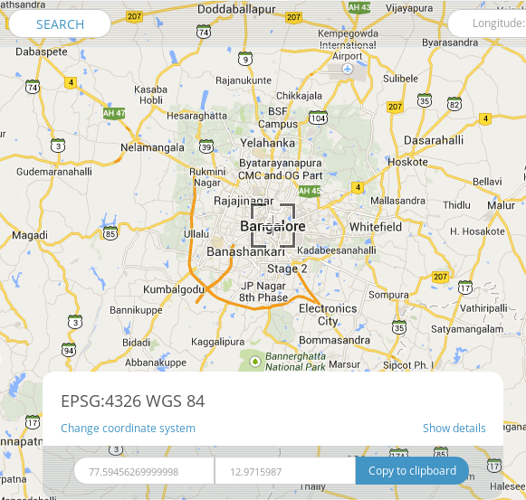
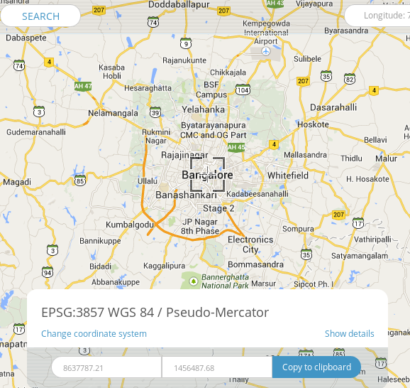

1. Earth and its representation
Created Monday 10 November 2014
Earth
- Shape
- Theoretically
- Sphere
- Effect of gravity and rotation
- Spheroid or oblate ellipsoid
- The equatorial diameter is nearly 1/300 longer than polar diameter
- Theoretically
- Assuming surface has a constant radius, any point on it is uniquely identified using a polar two-coordinate system
- Selected parallels (in red) and meridians (in blue), here spaced 15° apart, comprise a spherical graticule.
- Longitude is measured from GMT, Latitude from equator
courtesy
Representaion of Earth
- Map is a Representaion [ Globe(3d) to Map(2D) ]
- Projection - Conversion process and logic
- A geodetic datum is a set of parameters (including axis lengths and offset from true center of the Earth) defining a reference ellipsoid. For each mapped region, a different datum can be carefully chosen so that it best matches average sea level, therefore terrain features.
- Maps are never free from errors
- Distance Measurement
- Location
- Area distortion
- Shapes
- Directions
- Mercator projection - cylindrical map projection

- EPSG:4326 refers to WGS84 earth as an ellipsoid
- Has metric coordinates, uses lat and long
- Used by GPS
- WGS84 Bounds: -180.0000, -90.0000, 180.0000, 90.0000

- For example bangalore is

- EPSG:900913 (EPSG:3857) Web Mercator refers to WGS84 earth is sphere
- Spherical mercator maps use an extent of the world from -180 to 180 longitude, and from -85.0511 to 85.0511 latitude
- Projection bounds -20026376.39 -20048966.10 20026376.39 20048966.10
- Initially by Google Maps for tiled maps
- Named by openlayers project - 'googlE' (substitute '9' for 'g' and squint a bit)
- Originally rejected by standards body, then accepted with 3857
- Used by OpenStreetMap and in general web
